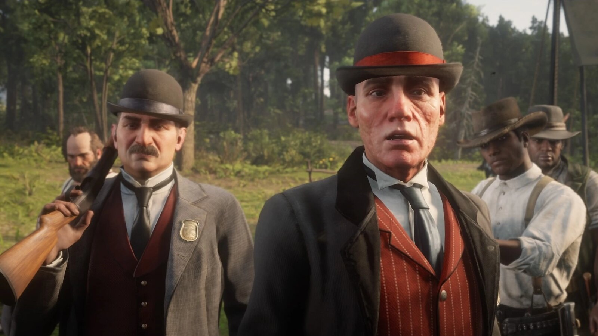
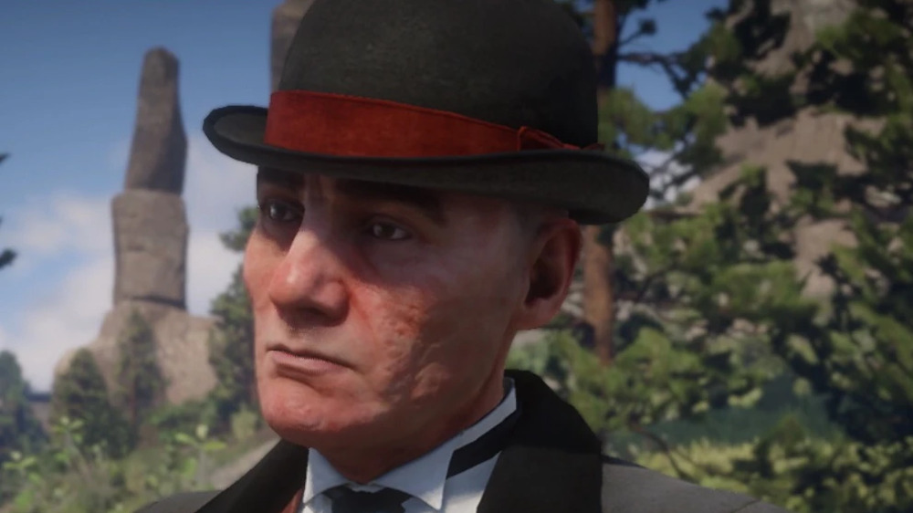
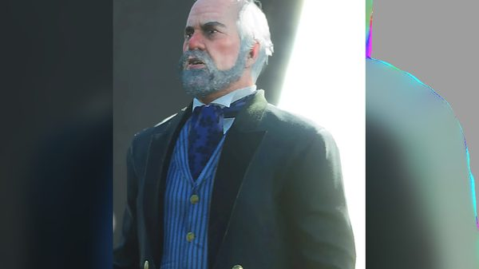
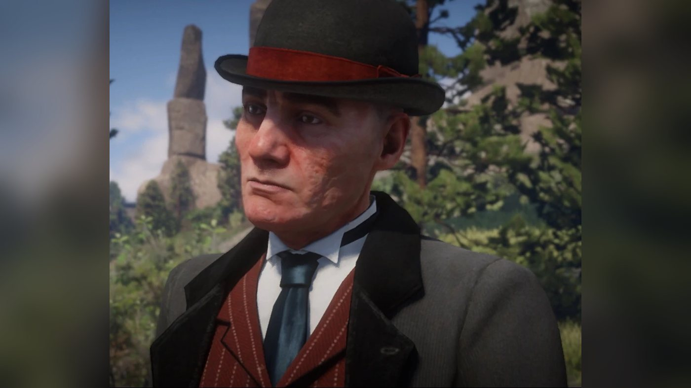
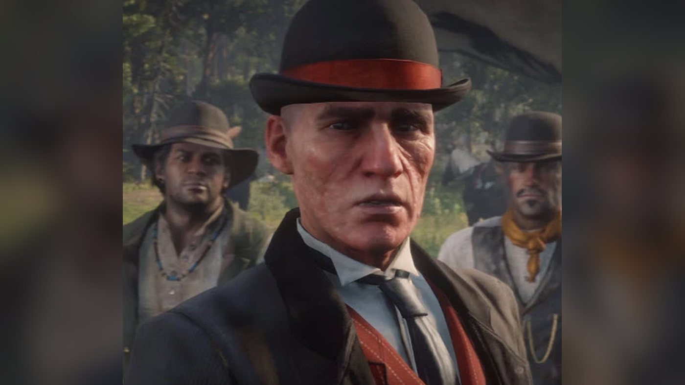
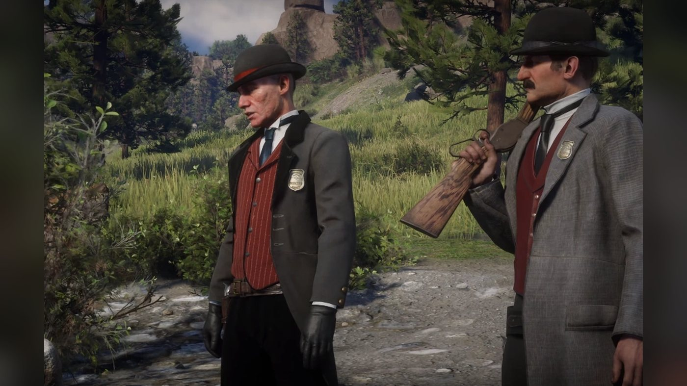
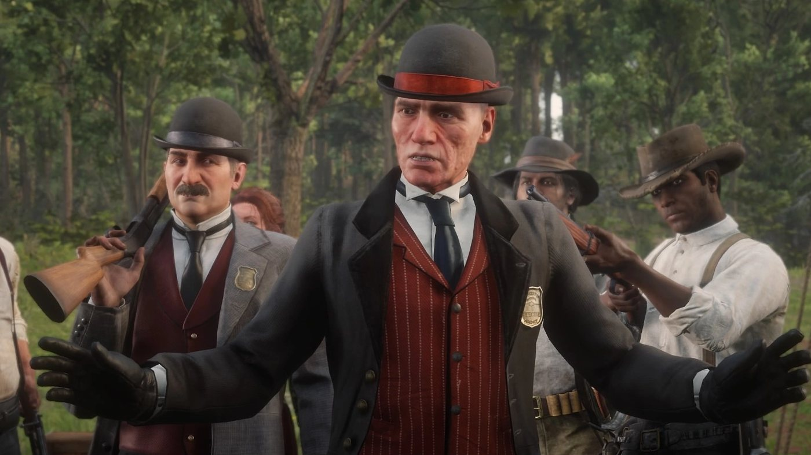
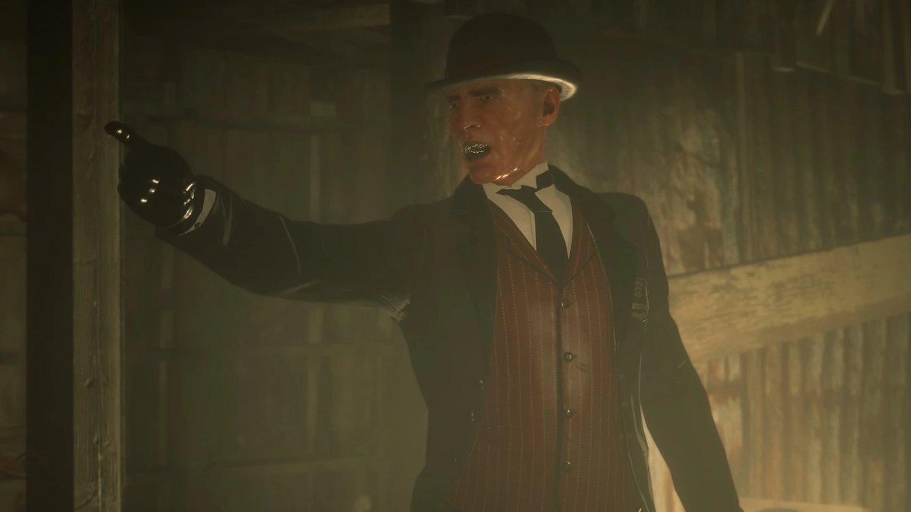
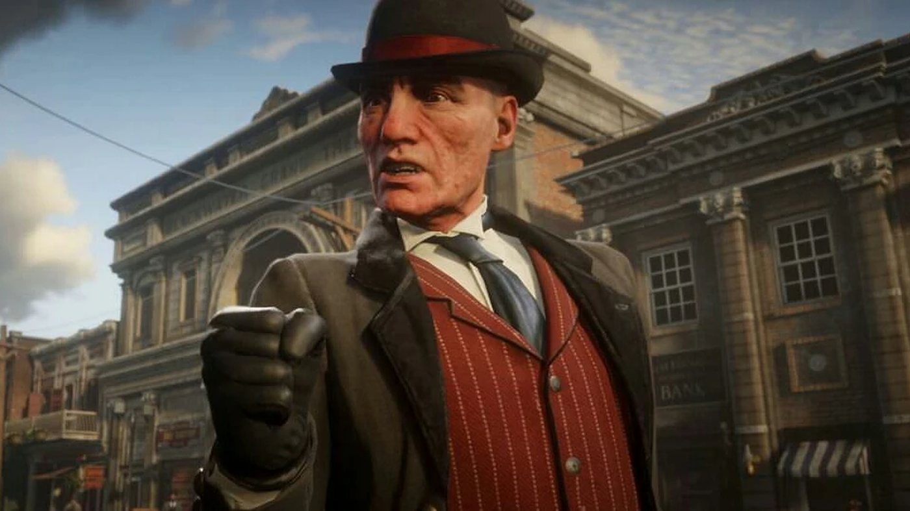

Character · Pinkerton Agency
Andrew Milton
Andrew Milton is a Pinkerton agent and one of the antagonists of Red Dead Redemption 2 (2018), set in 1899. Paid by the industrialist Leviticus Cornwall, whose train the gang robbed, he hunts the Van der Linde gang with his partner Edgar Ross. In chapter 2 he approaches Arthur Morgan by a river and asks him to hand over Dutch van der Linde. In chapter 3 he walks into the camp at Clemens Point and offers the others three days to flee if Dutch gives himself up. In chapter 4 he kills Hosea Matthews in front of the bank in Saint Denis. In chapter 6 his men seize Abigail Marston; at Van Horn he tells Arthur that Micah Bell is his informant, just before Abigail shoots him dead.
He is played by John Hickok.
- Name
- Andrew Milton (first name given only in a 1907 newspaper and, according to the Red Dead Wiki, the ending credits)
- Alias
- Agent Milton; Agent Moron, for Dutch
- Born
- Not given in the game
- Died
- 1899, at Van Horn Trading Post, shot by Abigail Marston in "Red Dead Redemption"
- Status
- Deceased
- Nationality
- American
- Affiliation
- Pinkerton National Detective Agency, "seconded to the United States Government" in his own words. The Red Dead Wiki also lists the U.S. Marshals and the Blackwater Police Department
- Backer
- Leviticus Cornwall
- Partner
- Edgar Ross, his protégé
- Games
- Red Dead Redemption 2
- Played by
- John Hickok
Biography
Origins
The game gives no birth date, birthplace or family for Andrew Milton, and shows nothing of his life before 1899. When he first appears, he introduces himself as an agent of the Pinkerton Detective Agency. He works with a younger agent, Edgar Ross, who follows his lead and rarely speaks in his presence. The game does not say when the two men started working together.
Milton's pursuit of the Van der Linde gang begins off screen. During the failed ferry robbery in Blackwater, Mac Callander, one of its members, is separated from the gang and has to escape on his own. Milton later tells Arthur that he found him (see chapter 2). Milton knows of the robbery of a train belonging to Leviticus Cornwall near Granite Pass, which the gang carried out in the first chapter. The game never shows how Milton and Ross were assigned to the case.
Red Dead Redemption 2 (1899)
Chapter 2: Horseshoe Overlook
Milton first appears in "A Fisher of Men". At Abigail's request, Arthur Morgan takes Jack Marston fishing on the Dakota River, near the Horseshoe Overlook camp. Milton and Ross ride up and dismount while Jack is showing Arthur a flower necklace he has made for his mother. Milton names Arthur, calls him the most trusted associate of Dutch van der Linde and sums up what he says the files tell about him: an orphaned street kid won over by Dutch who grew into a murderer. He then introduces himself and Ross, and puts the bounty on Arthur's head at 5,000 dollars.
Milton says that the agency wants Van der Linde. Arthur claims he has not seen Dutch for months. Milton answers that a man fitting Dutch's description has robbed Cornwall's train near Granite Pass. He offers Arthur a deal: if Arthur brings in Dutch, he will not hang. Arthur refuses, saying that his only crime is not playing by their rules. Milton cuts him short: he has already heard that speech from Mac Callander. He then says that Mac was badly wounded when he reached him and that he killed him slowly, calling it a mercy killing. Arthur throws his fishing rod to the ground. Ross aims his rifle at him, and Jack hides behind Arthur.
Arthur asks Milton whether he enjoys being a rich man's toy. Milton answers that he enjoys society and that the gang, which worships savagery, will die savagely. Arthur replies that everyone dies, and Milton says that some will die sooner than others before wishing him good day and walking off. Ross follows, telling Jack to enjoy his fishing while he still can. Arthur reaches for his pistol, looks at Jack and lets it go. On the way back, he reassures Jack. At camp, he reports to Dutch that agents named Milton and Ross know about the train, know the gang is nearby and offered him his freedom in exchange for Dutch. Dutch decides to do nothing for the moment, saying the Pinkertons only want to scare them into a mistake.
Chapter 3: Clemens Point
"The Battle of Shady Belle" opens at Clemens Point, the morning after the gang's attack on Braithwaite Manor, where it went looking for the kidnapped Jack. Dutch, Hosea Matthews, Arthur and John Marston are talking at a table when Lenny Summers warns Dutch of a problem. Milton and Ross walk into the camp. Milton greets Dutch and Hosea by name, then asks John who he is; John answers with a made-up name. Milton introduces himself and Ross, and greets Arthur as someone he has met before.
Milton tells the gang that the land is civilized now. He says that the Native Americans, whom he calls savages, were not killed so that people like them could behave as if human dignity and basic decency had never been invented. Dutch replies that the place is not civilized at all, only greedy. Milton asks him who made him the messiah of the people he has led astray, and calls him nothing more than a killer. He then makes his offer: if Dutch comes with him, the others get three days to run off and start new lives elsewhere. He adds that he does not want to kill all of them, only Dutch.
Dutch raises his hands and pretends to accept. The gang loads its weapons, and Susan Grimshaw tells Dutch that the agents should leave. Milton warns them that they are making a big mistake. Dutch asks him to stop following them and promises they will soon be gone. Milton answers that he cannot, that he will come back with fifty men, that all of them will die, and urges them to run. Lenny sees the two agents out. Dutch sends Lenny to follow them and make sure they go, and orders the camp packed. Riding with John to check Shady Belle, a plantation house in the bayou near Saint Denis, Arthur says they must move everyone before Milton comes back with an army.
Chapter 4: Saint Denis
In "Banking, The Old American Art", the gang robs the Lemoyne National Bank in Saint Denis. Hosea and Abigail Marston set off a diversion outside while the others go in. Milton captures Hosea during the diversion; Abigail gets away. Pinkertons surround the bank. Milton holds Hosea in the street in front of the building and shouts for Dutch to come out. Dutch asks him to let his friend go, warning that people will get shot for nothing. Milton answers that the gang has had its chances. He pushes Hosea forward and, when Hosea turns back toward him, shoots him in the chest. He tells Dutch that this is their deal. According to the Red Dead Wiki's page on Ross, Ross stands beside Milton during the execution.
Milton then leaves the scene to his men. Dutch and Arthur open fire, and a shootout follows. Arthur blows a hole in a wall with dynamite and the gang escapes over the rooftops. Lenny is shot dead by Pinkertons during the escape, and John is arrested. Dutch, Arthur, Micah Bell, Bill Williamson, Javier Escuella and Charles Smith hide until nightfall; Charles draws the guards away while the other five board a boat leaving the port. A later newspaper article, "Saint Denis Robbers Still on the Run", credits Pinkerton agents with killing two members of the gang, Lenny and Hosea, and reports that a third was arrested.
Chapter 5: Guarma
Milton does not go to Guarma, where Dutch, Arthur, Micah, Bill and Javier are shipwrecked. The Pinkertons' deal with Micah is only revealed in chapter 6.
In "Fleeting Joy", the gang reunites at Lakay, an abandoned village in the bayou where Sadie Adler has led those who stayed behind. Arthur arrives first, then Micah and Javier, Dutch and finally Bill. The reunion is cut short when Milton and a large force of Pinkertons surround the village. Milton announces himself and calls on the gang to come out with their hands up, in the name of Cornwall's company, the United States government and the Commonwealth of West Elizabeth. According to the Red Dead Wiki, he tells his men to wait five seconds, then shrugs and orders them to open fire. The agents shoot into the house where the gang is gathered, including with a machine gun.
Sadie leads Arthur through a trapdoor into another building so that they can take the agents from the side. Milton has his men cease fire and shouts that the gang mistook his mercy for weakness, that he will now show strength, and that he will hunt every one of them down. The Pinkertons set the village on fire. Bill joins Arthur and Sadie, and Arthur turns the machine gun on the attackers, who retreat. According to the Red Dead Wiki, Milton gets away during the fighting. Afterwards, according to the Red Dead Wiki's list of camp events, Susan orders everyone to pack before the Pinkertons return. After "That's Murfree Country", the gang moves north to Beaver Hollow, in Roanoke Ridge.
Chapter 6: Beaver Hollow
In "Just a Social Call", Arthur, Dutch and Micah wait in the harbor at Annesburg for Cornwall's yacht. Milton and Ross step off the boat with Cornwall. According to the Red Dead Wiki, Milton thanks Cornwall for his hospitality. Cornwall berates the two agents for their lack of progress and threatens to stop paying them. Milton answers, according to the wiki's page on Cornwall, that they have done everything they can within the confines of the law. Cornwall tells him to find Dutch van der Linde and to leave the laws to those who need them, and the two agents leave. Dutch then confronts Cornwall and shoots him dead. Arthur, Dutch and Micah fight their way out of the town against Cornwall's guards and the Pinkertons.
While most of the men rob an army payroll train in "Our Best Selves", Milton's men grab Abigail outside the Beaver Hollow camp, where she is with Tilly Jackson and Jack. Tilly hides with the boy. At the start of "Red Dead Redemption", Tilly meets the gang on the road and tells them that Milton and his men have taken Abigail to Van Horn, to be put on a boat and tried for murder. Micah argues for leaving her, and Dutch agrees and rides back to camp with most of the others. Arthur sends Tilly and Jack to wait at Copperhead Landing and leaves for Van Horn with Sadie.
At Van Horn, Sadie asks Arthur to cover her from the lighthouse with her sniper rifle. Through the scope, Arthur sees Milton taking Abigail into the trading post. Sadie advances through the town until Milton's men seize her at the store. Arthur says that he and Milton will have to talk this out like gentlemen, comes down, fights his way through Milton's men and kills the agents holding the two women. As he cuts Abigail free, Milton holds a gun to his back and tells him to calm down. Arthur coughs heavily. Milton remarks on the cough, and Arthur tells him that it is tuberculosis and that he will be dead soon, with Milton alongside him. Milton answers that Arthur will die but that he himself will be fine, and reminds him that he was offered a deal and should have taken it.
Milton then says that not all of the gang have Arthur's scruples, and names Micah Bell. Arthur asks whether he means Molly O'Shea. Milton answers that the Pinkertons questioned Molly a couple of times, that she never said a word and that they had to let her go. Micah, he says, was picked up when the gang came back from the Caribbean and has done as he was told ever since. Arthur grabs Milton's revolver but is too weak to turn it. Milton laughs at him for losing his strength. Abigail frees herself, takes Sadie's revolver and shoots Milton in the head, calling him a horrible man. She cuts Sadie loose, and the three fight their way out of Van Horn.
Arthur rides back to Beaver Hollow. He tells Dutch that he has just seen Agent Milton, that Abigail shot him, and that Micah was close to Milton. When Micah denies it, Arthur answers that Milton told him. Pinkertons attack the camp soon afterwards, now led by Ross. During the escape through the caves, Arthur tells John that Micah was the informant and that Milton told him so.
After his death
Milton is mentioned again in the 1907 epilogue, in the article "Bureau of Investigation Founded", printed in the Blackwater Ledger No. 74, the New Hanover Gazette No. 39 and the Saint Denis Times No. 55. The article announces that Ross will head a new federal investigative agency. It states that Ross served for many years as a senior Pinkerton agent "under the mentorship of the late Andrew Milton", before moving to the National Bureau of Criminal Identification.
Personality
Rockstar's character descriptions of September 2018 cover the Van der Linde gang and do not include Milton, and no character page from an official guide is known for him. What the game shows of him comes from a few face-to-face scenes, in which he does the talking for the agency. In his first meetings with the gang, he introduces himself by his title and his agency. He addresses the outlaws formally, as Mr. Morgan, Mr. Matthews or Mr. van der Linde. He speaks in the name of law and civilization, and describes the gang's way of life as savagery (see In his own words).
In his own words
By the river in "A Fisher of Men", Arthur asks whether he enjoys being a rich man's toy. Milton answers: "I enjoy society... flaws and all. You people venerate savagery... and you will die... savagely. All of you." When Arthur replies that everyone dies, he says: "Some of us sooner than others. Good day, Mr. Morgan."
At Clemens Point, in "The Battle of Shady Belle", he lays out his view to the whole gang: "I don't know if you're aware but this... this is a civilized land now. We didn't kill all them savages only to allow the likes of you to act like human dignity and basic decency was outmoded or not yet invented. This thing, it's done." To Dutch he says: "And as a consequence that lets you take what you please, kill whom you please and hang the rest of us? Who made you the messiah to these lost souls you've led so horribly astray?" When Dutch calls himself a seeker, Milton answers: "You ain't much of anything more than a killer, Mr. van der Linde." He adds: "I don't wanna kill all these folk, Dutch... just you."
At Van Horn, when Arthur tells him he has tuberculosis and will take him along, Milton replies: "You'll be dead, sure... but I'm gonna be just fine. We offered you a deal, Mr. Morgan... you should have taken it."
Names
He introduces himself as Agent Milton, and Arthur and Dutch call him Mr. Milton. His first name is never spoken. It appears in the 1907 newspaper article "Bureau of Investigation Founded" (see Biography, After his death). According to the Red Dead Wiki, it also appears in the ending credits. At Clemens Point, Dutch greets him with: "And to what do we owe the pleasure, Agent Moron?" Susan Grimshaw calls him Dutch's new friend: "I think your new friend should leave now, Dutch." According to the Red Dead Wiki's page on cut content, the game files name him Milton Andrews.
Appearance
He has a thin build, a pitted, beardless face and dark hair cropped close on the sides and combed back. He wears the same kind of outfit as the other Pinkerton agents: a dark gray suit with his badge on the lapel, a red waistcoat and a black bowler hat.
Relationships

Dutch van der Linde
Dutch is the man Milton wants. At the river he tells Arthur: "We want Van der Linde." Their one face-to-face conversation takes place at Clemens Point. Dutch answers his speech on civilization: "This place, ain't no such thing as civilized. It's man so in love with greed, he has forgotten himself and found only appetites." He mocks the offer made to him: "You came for me? Risked life and limb in this den of lowlifes and murderers so that they might live and love? Ain't that fine." Then he raises his hands as if to surrender: "In that case... It'd be my honor... to join you." The gang takes up its weapons.
At the bank in Saint Denis, Dutch pleads with him from inside the building for Hosea's life (see Biography). In "Just a Social Call", Dutch watches him from the Annesburg harbor as he comes off Cornwall's yacht, and kills Cornwall after the agents have left (see Biography).

Arthur Morgan
Milton knows Arthur from the agency's files before they meet at the river in "A Fisher of Men" (see Biography). Arthur tells him he is guilty of nothing except not playing by his rules, and asks: "You enjoy being a rich man's toy do you?" To Milton's threat he answers: "Oh, we're all gonna die, Agent." At Clemens Point, Milton greets him as an acquaintance: "Ah, Mr. Morgan, nice to see you again". On the ride to Shady Belle, Arthur tells John that they must move everyone "before that bastard Milton comes back with an army".
At Van Horn, Arthur tells him plainly that he has tuberculosis; according to the Red Dead Wiki, Milton is one of the few characters Arthur tells outright. When Milton tells him he should have taken the deal, Arthur answers: "I'm a fool, Mr. Milton." His last words to him are: "You're still a yapping dog, Mr. Milton..." Their final confrontation and Milton's death are told in the Biography.

Edgar Ross
Ross is Milton's partner in 1899 and mostly leaves the talking to him. Ross is with him at the river and at Clemens Point, where Milton introduces him as Agent Ross, at the bank in Saint Denis according to the Red Dead Wiki, and in Annesburg, where the two come off Cornwall's yacht together. After Milton's death, Ross takes over the hunt (see Biography).

Hosea Matthews
Milton recognizes Hosea at Clemens Point: "Mr. Matthews, I presume." During the Saint Denis bank robbery he catches Hosea in the diversion and kills him in front of the bank (see Biography).

Leviticus Cornwall
Cornwall pays the Pinkertons who hunt the gang. The gang robbed his train in the Grizzlies, and Milton brings the robbery up at the river. In "Just a Social Call", Cornwall berates Milton and Ross in Annesburg for their lack of progress and threatens to stop funding them (see Biography).

Abigail Marston
Milton's men seize Abigail outside Beaver Hollow during "Our Best Selves". At Van Horn she kills him with Sadie's revolver (see Biography).

Tilly Jackson
Tilly escapes Milton's men with Jack and brings the news to the gang at the start of "Red Dead Redemption": "Agent Milton and his men... took her to Van Horn... to be put on a boat and tried for murder."

Micah Bell
Milton names Micah as the Pinkertons' informant at Van Horn (see Biography and Quotes). Back at Beaver Hollow, Arthur tells Dutch: "Seems old Micah was pretty close with Milton." He tells John: "Micah was the rat, John. Milton told me." Earlier, Micah had watched Milton come off Cornwall's yacht in Annesburg with Arthur and Dutch.

Molly O'Shea
Molly had claimed in front of the gang that she told the Pinkertons about the Saint Denis bank job, and Susan Grimshaw shot her (see Molly O'Shea). What Milton later says about her questioning is told in the Biography.

Jack Marston
Jack is fishing with Arthur when Milton and Ross ride up to the river. Milton's first words are about him: "What a fine young man... and in such complex circumstances." On the way back, Jack asks Arthur why he lied about where Dutch is, and Arthur calls the two agents "disagreeable men". Jack is with Tilly when Milton's men take his mother (see Biography).

John Marston
At Clemens Point, Milton names Dutch and Hosea, then turns to John and asks who he is. John answers: "Rip Van Winkle." John is in prison at Sisika when Milton attacks Lakay.

Lenny Summers
Lenny warns Dutch as Milton and Ross walk into Clemens Point (see Biography). As the agents leave, Lenny tells Milton "Come on." and, according to the Red Dead Wiki, takes hold of him. Milton shoves him away: "Get your damn hands off of me, boy."

Sadie Adler
At Lakay she and Arthur take Milton's agents from the flank. At Van Horn Milton's men capture her, and Abigail kills Milton with Sadie's revolver (see Biography).
Mac Callander
Mac is a member of the Van der Linde gang who never returns after Blackwater. At the river, Milton brings him up to cut Arthur short: "Spare me the philosophy lesson... I've already heard it... from Mac Callander." When Arthur repeats the name, Milton says: "He was pretty shot up by the time I got to him... so really it was more of a mercy killing. Slow... but merciful." On the way back, Jack asks whether Mac is in jail, and Arthur says he hopes Mac is fine where he is.
Agent Johns
Johns is one of the Pinkerton agents under Milton. According to the Red Dead Wiki, he searches the train cars in the Saint Denis rail yard after the bank robbery, grumbling: "Milton said a lot. Come on. I won't be out here all night." The same wiki has him complaining, during a later search of Shady Belle in "Dear Uncle Tacitus", that Milton makes them go through the place again: "Mr. Milton... I'd like to find a poisonous snake for him."
Pinkerton agent
Mandate and means
Milton works for the Pinkerton Detective Agency. At the river he describes his position to Arthur: "Pinkerton Detective Agency... seconded to the United States Government." At Lakay he speaks in the name of three backers: Cornwall's company, the United States government and the Commonwealth of West Elizabeth (see Quotes). The hunt is paid for by Leviticus Cornwall (see Relationships).
Weapons and horse
The Red Dead Wiki lists a Schofield Revolver as his usual sidearm, along with a Cattleman Revolver; according to the same wiki, the Cattleman is the gun he uses to kill Hosea. He rides an Andalusian, according to the English-language wiki.
Missions
The Red Dead Wiki lists seven story missions in which he appears or is heard, from chapter 2 to chapter 6. The French edition of the wiki gives the same list without "A Fork in the Road". Two other missions are linked to him without showing him; they are listed in the second table.
Appearances
| Mission | Chapter | Milton's role |
|---|---|---|
| A Fisher of Men | 2. Horseshoe Overlook | Confronts Arthur and Jack by the Dakota River with Ross, offers Arthur his life for Dutch and describes the death of Mac Callander. |
| The Battle of Shady Belle | 3. Clemens Point | Walks into the Clemens Point camp with Ross and offers the others three days to disappear if Dutch comes with him. |
| Banking, The Old American Art | 4. Saint Denis | Captures Hosea during the diversion and shoots him outside the Lemoyne National Bank. |
| Fleeting Joy | 5. Guarma | Leads the Pinkerton attack on the gang's camp at Lakay. |
| A Fork in the Road | 5. Guarma | Voice only: with low honor, Arthur remembers two of Milton's lines after his tuberculosis diagnosis, one from "A Fisher of Men", given on the wiki's mission page as "You will die... savagely... all of you!", and one from "The Battle of Shady Belle". |
| Just a Social Call | 6. Beaver Hollow | Steps off Cornwall's yacht at Annesburg with Ross and is berated by Cornwall, shortly before Dutch kills Cornwall. |
| Red Dead Redemption | 6. Beaver Hollow | Holds Abigail at Van Horn, names Micah as the informant to Arthur and is shot dead by Abigail. |
Missions linked to him
| Mission | Chapter | Link with Milton |
|---|---|---|
| Who the Hell is Leviticus Cornwall? | 1. Colter | The gang robs Cornwall's train near Granite Pass, the robbery Milton later brings up with Arthur. |
| Our Best Selves | 6. Beaver Hollow | While the gang robs an army payroll train, Milton's men seize Abigail outside the Beaver Hollow camp (off screen). |
Quotes
The lines below are given in the original English. Those from "A Fisher of Men", "The Battle of Shady Belle" and "Red Dead Redemption" are checked against the Red Dead Wiki's transcripts of these missions. The wiki has no transcript of "Fleeting Joy": the two lines from that mission are taken from the quote list of its page on Milton.
You're a wanted man, Mr. Morgan. There's five thousand dollars for your head alone.
A Fisher of Men (RDR2, chapter 2), to Arthur by the Dakota RiverListen... this is my offer, Mr. Morgan... bring in Van der Linde... and you have my word, you won't swing.
A Fisher of Men (RDR2, chapter 2), to ArthurBut I came to make a deal. It's time. You come with me, and I give the rest of ya three days to run off, disappear and go live like human beings someplace else.
The Battle of Shady Belle (RDR2, chapter 3), to Dutch at Clemens PointI'm afraid I can't. And when I return I'll be with fifty men. All of you will die. Run away from this place, you fools! Run!
The Battle of Shady Belle (RDR2, chapter 3), after Dutch asks him to stop following the gangThis is Agent Milton with the Pinkerton Detective Agency. On behalf of Cornwall Kerosene & Tar... the United States Government... and the Commonwealth of West Elizabeth... we are here to arrest you. Come out with your hands up.
Fleeting Joy (RDR2, chapter 5), to the gang at Lakay (Red Dead Wiki quote list)You fools weren't listening to me, were you? I showed mercy... You mistook it for weakness. Now I will show strength and you may mistake it for brutality. There is no escape for any of you. I shall hunt you to the ends of the earth and the end of time! I've killed your friends and I've enjoyed killing them... and now I'm gonna kill each and every one of you!
Fleeting Joy (RDR2, chapter 5), after ordering his men to cease fire (Red Dead Wiki quote list)Molly O'Shea? We sweated her a couple of times... never talked a word, had to let her go. Micah Bell... we picked him up... when you boys came back from the Caribbean... and he's been a good boy ever since.
Red Dead Redemption (RDR2, chapter 6), to Arthur at Van Horn, after Arthur asks whether he means MollyYou're losing your strength, Mr. Morgan.
Red Dead Redemption (RDR2, chapter 6), his last words, laughing as Arthur fails to turn his revolver against him
Development and performance
Casting
Andrew Milton is played by John Hickok, an American actor born on August 31, 1957. According to the Red Dead Wiki's page on Hickok, he was cast as both the voice and the motion-capture actor for the character. Wikipedia's list of the game's characters also credits him in the role. The wiki lists no other part for him in the series, and no interview in which Hickok discusses the role has been found.
The actor
Hickok's career is mostly on stage. The Internet Broadway Database lists six Broadway productions between 1990 and 2011. He created the roles of Governor Slaton in the musical Parade (1998), Zoser in Elton John and Tim Rice's Aida (2000) and Professor Bhaer in the musical Little Women (2005). On television he has made guest appearances in the Law & Order series, The Blacklist and Body of Proof. He teaches performance and directing as an adjunct professor at Western Connecticut State University, whose faculty page says: "Most importantly, he plays the role of Agent Milton in Red Dead Redemption 2."
Roger Clark, who plays Arthur Morgan, said in a video for the Gamology channel published on July 31, 2024 that Hickok is related to the frontier lawman Wild Bill Hickok, according to Wikipedia's list of the game's characters.
Reception
The Pinkertons on trial
The game's portrayal of the agency led to a legal dispute shortly after release. According to Slate (February 1, 2019), Pinkerton Consulting and Investigations, the company that now carries the name, sent Take-Two Interactive a cease-and-desist letter in December 2018 and asked for royalties for the use of its trademark. Take-Two filed suit on January 11, 2019, asking a court to confirm its right to depict the historical agency. Pinkerton's president, Jack Zahran, was quoted as asking: "Is it open season on companies that have achieved longevity? What's next? A game where Coca-Cola poisons mankind?" Game Informer reported on April 11, 2019 that Take-Two had voluntarily withdrawn its suit; no settlement was announced.
Assessments
- Slate, Rebecca Onion, February 1, 2019: "Agent Milton is pockmarked and sinister, and the actor (John Hickok) delivers his lines in a hammed-up, insinuating tone." The article compares the attack on Lakay, with "a serious arsenal that includes a Gatling gun", to the Pinkertons' 1875 raid on the farm of Jesse James's family.
- TheGamer, Rafly Gilang, article updated on March 11, 2021: in a feature on the real faces behind the cast, "John Hickok deserves credit for making the villain both hateable and menacing."
- WhatCulture, Matt Thompson, February 7, 2022: Milton ranks fourth of fifteen villains of the series. Thompson writes that "he was just as lawless as the 'savages' he seeks to hunt down", and that an argument could be made that he is the main villain of the game.
Academic analysis
In a chapter on law and order in the series, published on March 30, 2023 in the collection Red Dead Redemption: History, Myth, and Violence in the Video Game West (University of Oklahoma Press, edited by John Wills and Esther Wright), the historian Robert Whitaker links Milton's methods to those of the real agency. According to Wikipedia's list of the game's characters, he sees Milton's use of spying and infiltration as a reminder of real Pinkerton techniques, including the agency's role against the Molly Maguires, a secret society of Irish-American miners. Like Slate, he compares Milton's violence to the 1875 raid on the James farm, and also to the Homestead strike of 1892.
Other media and legacy
The Red Dead Wiki lists no appearance of Milton outside the story mode of Red Dead Redemption 2: he is absent from Red Dead Redemption (2010), set in 1911, and his character page names no role in Red Dead Online. Ross, his partner, carries the hunt on after his death: in 1911, as a Bureau of Investigation agent, he forces John Marston to hunt down the last members of the gang, and in 1914 Jack Marston kills him.
Trivia
- In the opening scene of "The Battle of Shady Belle", the subtitles spell Hosea's surname "Mathews" when Milton greets him.
- In "A Fisher of Men", Milton's and Ross's horses are present but invisible while Arthur and Jack are fishing. According to the mission page, the player can still search their saddlebags and be kicked by them.
- In the Van Horn cutscene of "Red Dead Redemption", pressing the on-screen grapple prompt changes nothing: Abigail always shoots Milton before he can fire.
- After that cutscene, Milton's body can be looted. It holds random items (a tonic, money, a watch or ammunition), never anything unique.
- The player can also pick up Milton's hat and wear it, but the game takes it off Arthur's head shortly before the cutscene in which he puts on his own hat for his final ride.
Gallery





